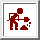
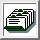
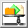
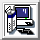
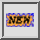
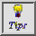
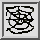

THE BUTTONS ABOVE
The buttons above appear in many SPIDER documents. They are there
for quick access to the top-level documents.
- What each of them stands for:
 THE SPIDER HOME PAGE
THE SPIDER HOME PAGE-  WORKING WITH SPIDER - A USER'S GUIDE
-  AN INDEX OF SPIDER OPERATIONS
- DOCUMENTATION AND HELP
 SPIDER ERROR MESSAGES AND DEBUGGING
SPIDER ERROR MESSAGES AND DEBUGGING-  SPIDER FILE FORMATS AND COLOR TABLES
-  DISTRIBUTION & INSTALLATION
-  WHATS NEW IN SPIDER
-  USAGE TIPS
-  Web (SPIDER Visualization GUI)
Source: buttons.html
Last update: 9 March 2015
ArDean Leith
©
Copyright Notice /
Enquiries: spider@wadsworth.org